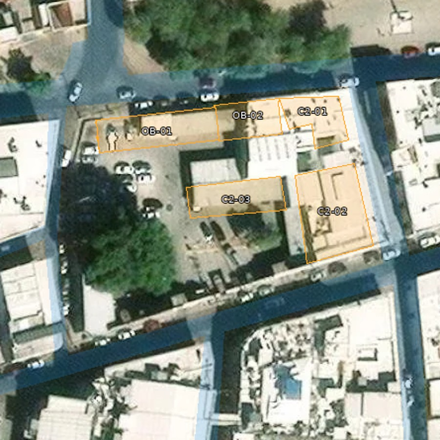
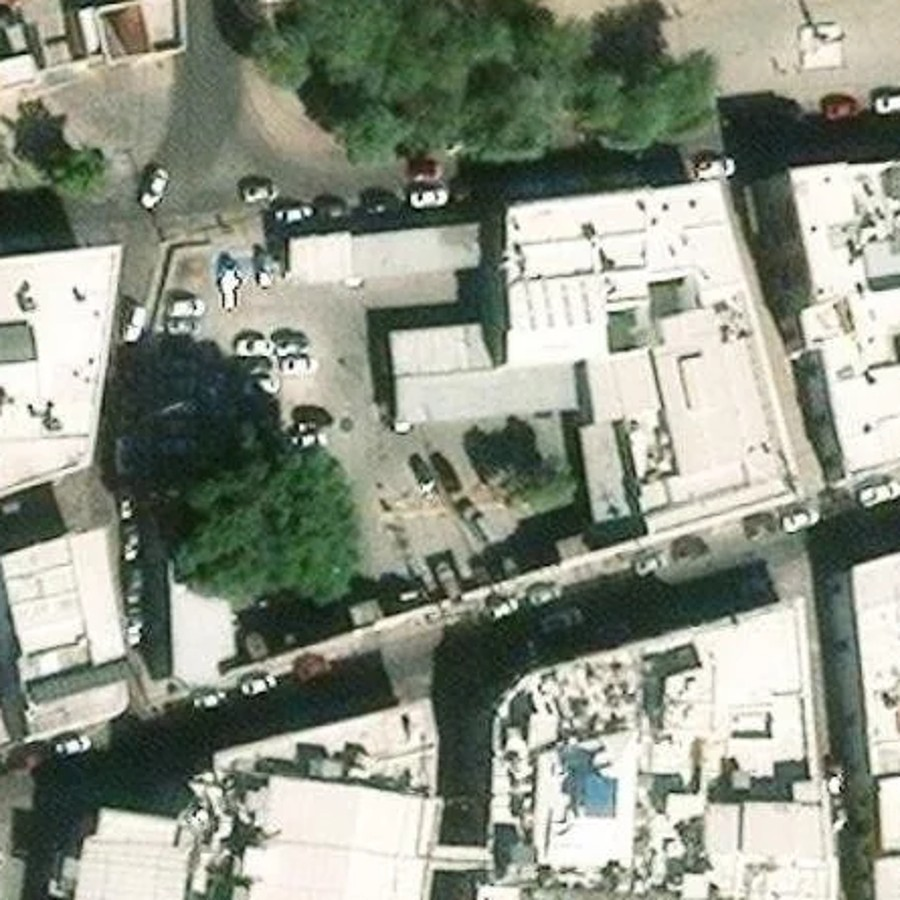
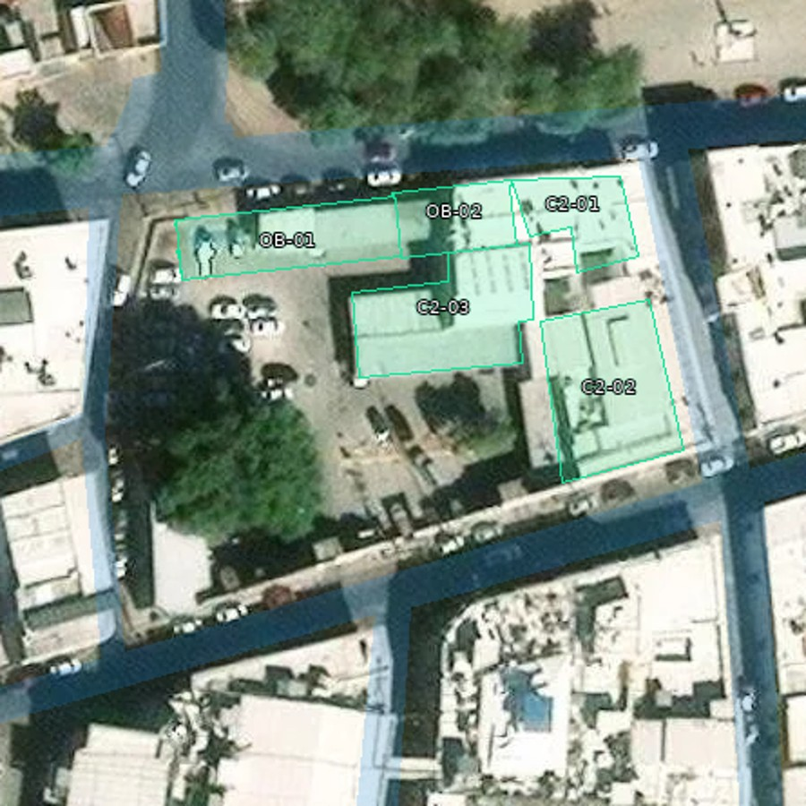

🟢 Punto 1 cerrado visualmente. Cinco edificios revisados: OB-01, OB-02, C2-01, C2-02 y C2-03. Se corrigió el contorno desplazado de C2-03 y se completó su brazo norte visible. Las otras cuatro plantas y las calles se conservaron.



Plantas extraídas del modelo 3D, en el mismo encuadre. Azul: calzada conservada. Las imágenes muestran el cambio del contorno, no una modificación de la fotografía.
| Sección | Estado del cierre por cuadra |
|---|---|
| 1. Planta y calle | 🟢 Cerrado visual · con evidencia |
| 2. Banquetas y esquinas | 🔴 Por cerrar · avance previo conservado |
| 3. Edificios y volúmenes | 🔴 Pendiente |
| 4. Fachadas y acabados | 🔴 Pendiente |
| 5. Equipamiento y cierre | 🔴 Pendiente |
Comprobaciones: sin invasión de calzada por las plantas; patio y estacionamiento abiertos; solo C2-03 cambia. El registro conserva geometría, fuente y hashes.
Aproximación visual. La referencia conservada tiene capturas regionales de enero de 2024; no es una fotografía actual ni un levantamiento topográfico. Alturas heredadas sin medir. Los bordes ocultos conservan continuidad estimada. El siguiente paso es banquetas y esquinas de C08.